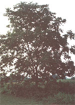

FAR LEFT: This young black walnut tree illustrates the classic ""spreading"" nut tree shape. ABOVE: Immature walnuts. The thick green husk is a good source of natural dye, as you'll discover when you're shucking it off. LEFT: With the leaves of the tree ready to drop, these nuts are just about ripe and will soon be littering the ground ...to the delight of foragers and squirrels.